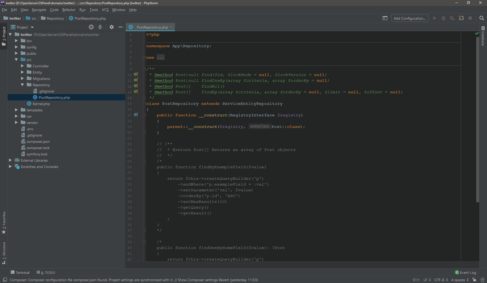

Symfony Entity
Сущности и миграции
В Symfony сущности «проецируют» на себя конкретную таблицу. Таблица User - сущность User. Для простоты восприятия пока можно считать, что сущность это модель. Однако, необходимо понимать, что Symfony не наследует MVC архитектуру, это HTTP фреймворк.
Продолжаем работать над постами, но теперь будем выводить их из БД, а для этого нам понадобится сущность Post. Создадим сущность с помощью генератора, который будет пошагово опрашивать нас, что она из себя представляет.
Пишем php bin/console make:entity,
вводим имя сущности – Post, далее создаем поля таблицы:
- - title (string, 255, not null);
- - body (text, not null);
- - likes (integer, null).
После генерации создалась сущность Post (src->Entity),
в которой можно увидеть свойства соответствующие полям таблицы, а так же геттеры/сеттеры для них.
Блоки аннотаций над свойствами прерогатива Docrtine.
Они красноречивы и просты в понимании, например, блок
@ORM\Column(type="string", length=255)
имеет строковый тип с максимальной длиной 255 символов. На основе данных блоков
доктрина будет создавать таблицу, мы увидим весь процесс в теме про миграции.

Одновременно с сущностью был создан репозиторий
PostRepository - класс, с помощью которого
будут выполняться запросы к базе данных. Он наследует EntityRepository
и имеет несколько стандартных методов для выборки, например find, findAll, findBy.
Закоментированные в нем методы мы будем использовать
для поиска по связанным таблицам.

{kind=link}
Миграции
Ранее мы подключали doctrine/doctrine-migrations-bundle
в составе рецепта doctrine.
Пришло время им воспользоваться и создать первую миграцию. Создаются миграции командой
php bin/console make:migration или же
php bin/console doctrine:migrations:diff
после создания сущности. Работает вся эта магия за счет маппинга в блоках аннотаций.
Если же вы изменили сущность, в помощь придет команда
php bin/console doctrine:migrations:diff, которая
выявит расхождение между свойствами вашего класса и базой данных, а потом создаст миграцию.
Итак, пишем php bin/console make:migration.
Убедиться, что миграция создана можно с помощью
php bin/console doctrine:migrations:status,
ну или просто проверить директорию src => migrations.
 Теперь применим ее к нашей БД командой
Теперь применим ее к нашей БД командой
php bin/console doctrine:migrations:migrate, соглашаемся.
База обновлена, таблица post создана, а вместе с ней таблица migration_versions
которая хранит историю всех примененных миграций.